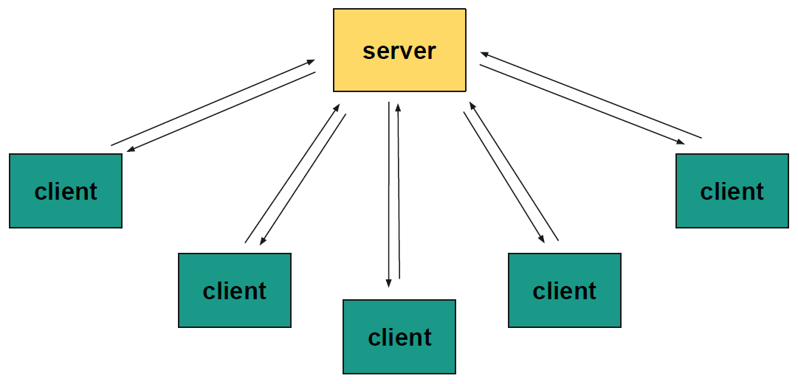
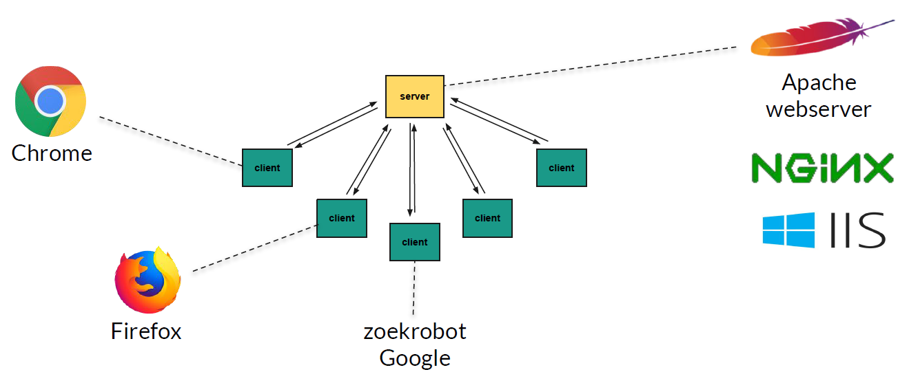
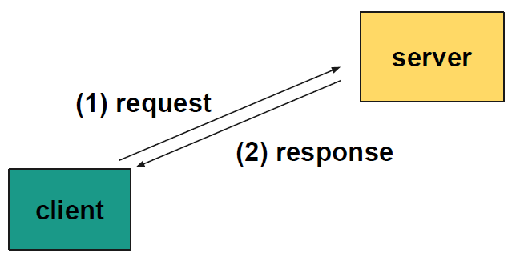
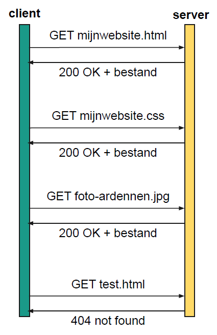
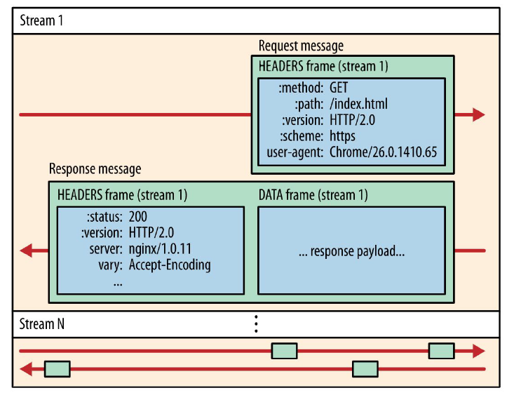
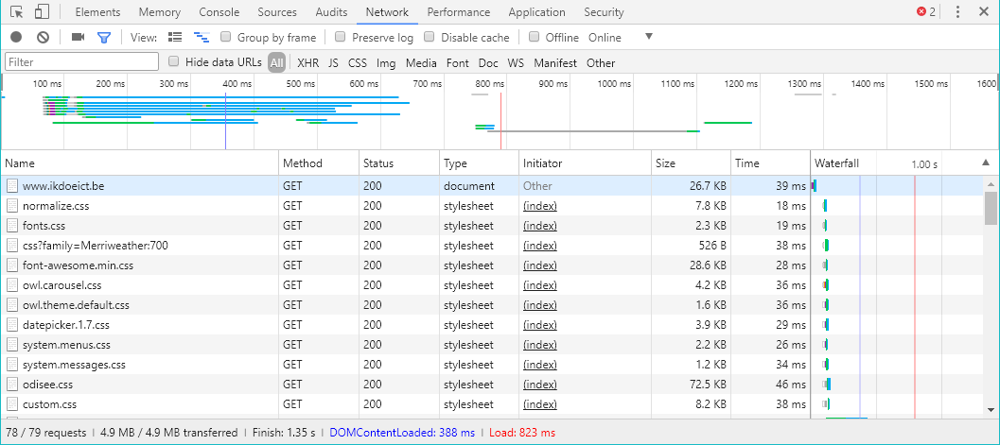
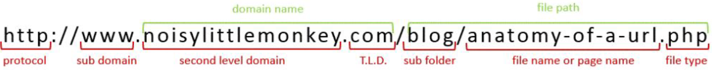
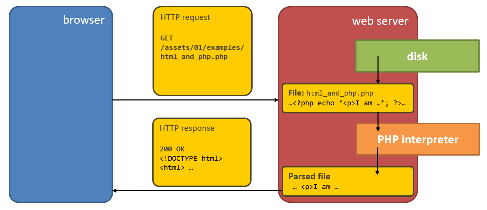
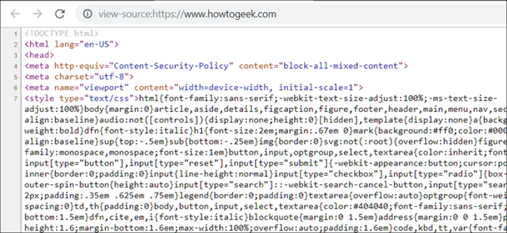

Back-end Development [OGI05w]
01. The webserver,
HTTP & PHP
01.1
The client-server model
The client-server model (1)

The client-server model (2)
- Client: a piece of software
- Server: a piece of software
- Multiple client communicate with 1 server
- The client asks a question and the server answers
Example: browsing a web page

Client-server communication

- client sends a request (initiator)
- server sends back a response
- communication over a protocol (for web traffic: HTTP over TCP/IP)
- server is listening on a TCP port (HTTP: port 80) for incoming requests
01.2
The webserver and HTTP
So what is a webserver?
- … a piece of software that answers an HTTP request ASAP by an HTTP response
- An HTTP request symbolizes a request for a file or document. When this document is available, it is sent in the HTTP response.
- HTTP request methods (or verbs)
- GET: asking for information
- POST: sending information
- HTTP status codes
- 2xx: success
- 3xx: redirection
- 4xx: request error
- 5xx: server error

HTTP/1.1
- HTTP request = request line + headers + ev. body

- HTTP response = status line + headers + body (= document)

HTTP/2.0
- HTTP request
- HEADERS (request method, HTTP version, path, …)
- DATA (e.g. file upload, form data)
- HTTP response
- HEADERS (status code, info about the server/document …)
- DATA (e.g. the document itself)

DevTools(F12): the network tab

Browsing the webserver by URL

- subdomain + domain → IP address e.g.
http://134.58.64.12/ - domain ev. followed by port number (default 80) e.g.
www.ikdoeict.be:8080 - file path: identify a document in the server's folder structure
- file path: sent in the HTTP request's header
Terminology
- Document root:
(server disk) folder where the webserver starts to look up documents upon an incoming request - Default page:
when the URL's path is a folder, the webserver looks forindex.htmlorindex.phpin this folder.
If not available, it might show a directory listing (or a forbidden page).
Remark: type of links
<img src="http://localhost:8080/img/popeye.jpg">
<a href="http://greatwebsite.be/pages/interesting.php">
These are absolute paths (full URLs). Avoid full URLs in your web application code. If you move your code to a production server, you already have a not working project.<img src="../img/popeye.jpg">
<a href="interesting.php">
These are relative paths (relative to the current page folder location). They are the most flexible option for your project.<img src="/img/popeye.jpg">
<a href="/pages/interesting.php">
Shortened absolute paths always start with/. They are full URLs without the domain name part i.e. they are relative to the domain name. If you move your code into a subfolder, you have a not working project.
01.3
Server-side code
Server-side code
- enables web application where visitors can log in, register for an event, publish blog posts, …
- PHP: scripts/code is executed on the webserver. Typically, this code communicates with a DBMS in order to consult/store data.
- Only the code fragments between
<?phpand?>are executed, only when the file's extension is.php
Code example
<!DOCTYPE html>
<html>
<head>
<title>Combining HTML and PHP</title>
<meta charset="UTF-8" />
</head>
<body>
<p>I am HTML</p>
<?php echo '<p>I am HTML, generated by PHP</p>'; ?>
</body>
</html>
Overview

View page source ≠ inspect element
-
View page source
- shows the HTML code that has been received via the HTTP response
- is the code sent by the server
- WHAT WE WILL USE TO INSPECT OUR CODE

-
Inspect element (Elements tab)
-
shows the Document Object Model (DOM) = a structural interpretation of the page source by the browser
- can contain corrections when the original HTML was invalid
- can be manipulated by JavaScript code
-
shows the Document Object Model (DOM) = a structural interpretation of the page source by the browser